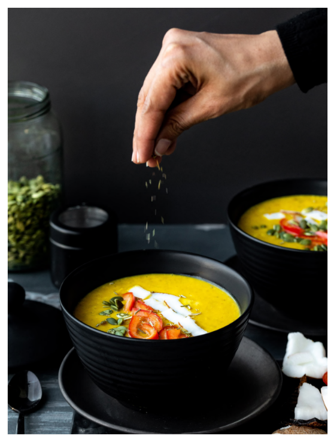

Note: This pumpkin soup ticks all the boxes! Its rich, creamy and ultimately satisfying. The rosemary & thyme combine to create a unique flavor, which you may have never experienced before.
Ingredients
Soup Base
- 1⁄2 kg red pumpkin, with peel
- 3 cups coconut milk
- 2 tablespoons fresh thyme or 2 teaspoons dry thyme
- 1 stem fresh rosemary or 1⁄2 teaspoon dry rosemary
- 1 tablespoon rock salt
Toppings
- 12 tablespoons pumpkin seeds
- 1⁄2 red bell pepper, cut into strips
- 1⁄4 small coconut, cut into strips
Pre-preparation
Prepare coconut milk.
Method
- Chop the pumpkin into chunks. Do not take the peel off. Add it to a steamer and let it steam for about 20 minutes, until soft.
- Once the pumpkin has cooled, place it in a blender, along with the coconut milk, thyme, rosemary, salt and chili. Blend until smooth.
- Pour the soup into bowls, add the toppings from above and serve.
Tip: Do not re-heat the soup because we should never cook coconut or coconut milk on the stove.
Tip: Make sure you add rosemary and thyme to this soup, since they carry all the flavor. In case fresh is not available, use their dried versions.
Return to top
Return to main page